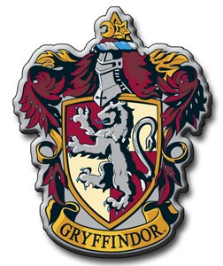
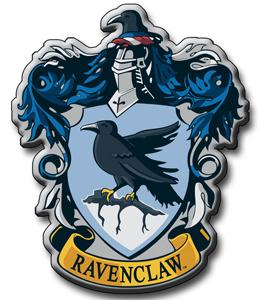
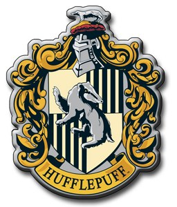
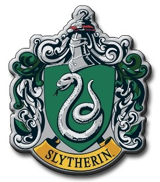

Gryffindor
Caracterizada por el valor y el coraje, fundada por Godric Gryffindor. Sus colores son escarlata y dorado, y esta representada por un león. Su fantasma es Sir Nicholas de-Mimsy Porpington, también conocido como Nick casi decapitado. La entrada a la sala común está situada en una torre en el séptimo piso escondido detrás de un portaretrato de La Dama Gorda., también conocida como "la Señora Gorda", a la cual los alumnos deben decir la contraseña imprescindible para entrar. La contraseña que primero se oye en Harry Potter y la piedra filosofal es: Caput Draconis.

[13] Gryffindor
Ravenclaw
Caracterizada por el ingenio, la creatividad, la belleza, la sabiduría e intelecto. Fundada por Rowena Ravenclaw. Sus colores son azul y bronce, y está representada por un águila (sin embargo en la película aparece un cuervo). Su fantasma es Helena Ravenclaw (hija de Rowena Ravenclaw), mejor conocida como la dama gris. La entrada a la sala común está situada en una torre alta en el séptimo piso. Se entra allí respondiendo una adivinanza del águila del aldabón.

[14] Ravenclaw
Hufflepuff
Caracterizada por la lealtad y una fuerte ética de trabajo, fundada por Helga Hufflepuff. Sus colores son el amarillo y el negro, y está representada por un Tejón. Su fantasma es El fraile gordo. La entrada a la sala común está situada debajo de las escaleras cerca de la cocina.

[15] Hufflepuff
Slytherin
Caracterizada por la ambición, la astucia y la herencia pura fundada por Salazar Slytherin. Sus colores son verde y plateado, y está representada por una serpiente. Su fantasma es El Barón Sanguinario. Su sala común está en las mazmorras debajo del lago a través de las tres piedras se accede por una puerta disimulada en un muro de piedra, diciendo una contraseña, su contraseña en el segundo año era sangre pura.

[16] Slytherin